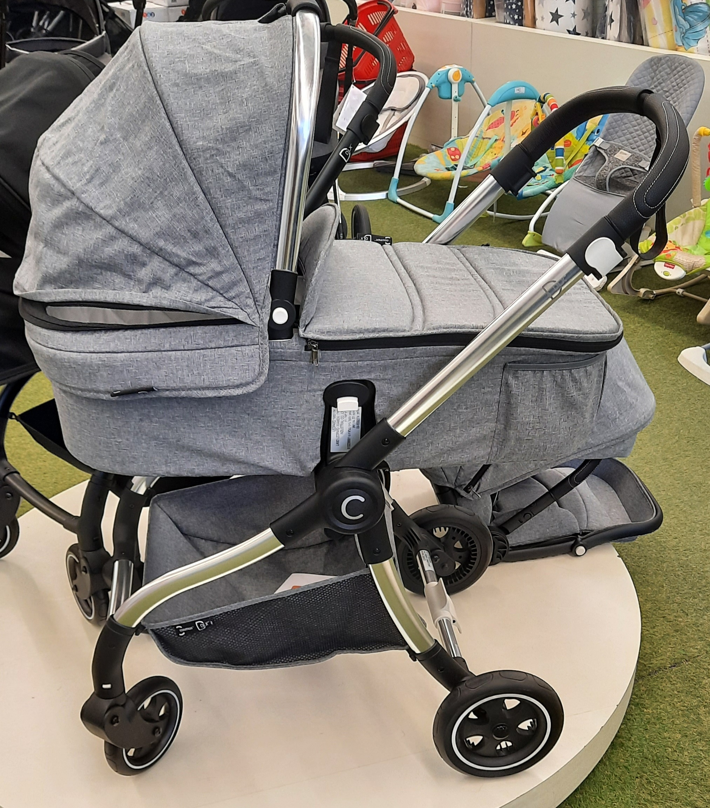

.מה אהבנו יותר ומה אהבנו פחות בעגלת בוגבו פוקס
בוגבו פוקס עגלת התינוק האולטימטיבית והטובה ביותר מבית בוגבו שתוכננה באופן מושלם לניווט קומפקטי ברחובות
בסטמאות צרות ובחללים קטנים אך נהדרת גם להרפתקאות בתנאי שטח מאתגרים
לא סתם נחשבת עגלת בוגבו כאופציה מעודפת על הורים רבים עגלות התינוק של בוגבו מצטיינות בעיצוב מיוחד וסטייל בלתי נשכח
לא פחות חשוב העגלה הינה עם הטכנולוגיה המתקדמת ביותר המותאמת לכל אורח חיים
העגלה כוללת עיצוב שלדה קומפקטי וייחודי, גלגלים גדולים, גגון בריזי עם חלונית הצצה, ומערכת קיפול חדשה, לתפעול מהיר וקליל
בנוסף היא כוללת ידית מתכווננת ומתארכת וכן סל אחסון תחתון גדול המכיל עד 10 ק"ג עם גישה נוחה וכיסים נוספים לאחסון
העגלה הזו מוגדרת כשותפה הטבעית להורים בעיר וכאשר הורים רבים חולקים את האתגר של השילוב של חיי עיר עם הורות אנו מוצאים
שהעגלה מביאה לנו את היכולת לשלב את ההורות גם בחיים העירונים הסאונים
למרות כל הנאמר עדין ישנם מספר חסרונות שיכולים להשפיע על ההחלטה אחת מהן זהו גובה ההעגלה שהינו יחסית מגביל את מי שגבוה זאת למרות שהידיות מתכוונות לגובה וזאת מאחר והאמבטיה עצמה נמוכה וגורמת לכאבי גב כל פעם שנרצה לטפל בילד או להרים או להוריד אותו
לסיכום אם אתם לא זוג גבוה והמחיר לא מפריע אז בוגבו פוקס היא הבחירה המושלמת
.מה אהבנו יותר ומה אהבנו פחות בעגלת אויסטר זירו
אויסטר נמכרת בבלעדיות בחנות היבואן והיא בהחלט נכנסת לקטגוריה של מותג מוצלח מצד אחד ומהצד השני כמותג שכלכלית קל יותר לזוג רגיל לקנות ביחס למתחרות בנוסף היא עגלה קלה מאד בקטגוריה העירונית ולמעשה נמצאת על התפר בין עגלה קומפקטית לעגלה עירונית וזהו היתרון שלה
מושב הטיולון מרופד בבדים אלגנטיים ועמידים רוחב מושב הטיולון מעולה ויכול לשאת משקל של עד 20 ק"ג הוא גבוה יותר מרוב העגלות בקטגוריה בהן המשקל המקסימלי הוא 15 ק"ג מבחינת גובה העגלה הידיות בגובה של 1.02 מטר הגלגלים כוללים בולמי זעזועים והקיפול של העגלה מתבצע בקלות ביד אחת בלי מאמץ פיזי מיוחד וכן משקל העגלה הוא בין הקלים בקטגוריה ולא פחות חשוב ניתן לכוונן מספר רב של מצבי ישיבה בלי הגבלה ולפי הרצון של ההורה והילד
לסיכום כן מפריע לי המאסיביות של העגלה ככה שאם אני עם רכב קטן אין לי סיכוי להכניס את העגלה עם האמבטיה וגם כאשר אני יעבור למצב של טיולון עדין אני התקשה אבל זו הבעיה היחידה בהחלט בכל הקשור לעגלה ולכן למי שלא מפריע המאסיביות של אויסטר זירו אז היא בחירה נחמדה מאוד מבחינתו

.מה אהבנו יותר ומה אהבנו פחות בעגלת סייבקס פריאם
סייבקס פריאם היוקרתית היא עגלה 3 ב 1, ניתן לחברה לה טיולון דו צדדי שתוכלו לבחור האם ללכת איתה עם או נגד כיון הנסיעה אמבטיה עם ריפוד איכותי וניתן לחבר לה גם סלקל (ניתן לקנות בנפרד) מבית סייבקס
מושב הטיולון מותקן בגובה קלאסי לשימוש ככיסא בשולחן אוכל וכן ניתן לבחור מצבי ישיבה/שכיבה מגוונים עד כדי כך שזה מתאים גם מגיל לידה גובהו 80 ס"מ עגלת הפריאם בעלת אופציות יחודיות לנוחות נסיעה כגון קיפול הגלגלים הקדמיים ונסיעה בעזרת הגלגלים האחוריים בלבד דבר המאפשר נוחות נסיעה בדרך משובשת, מדרגות וחול ים
לסיכום עגלת סייבקס מהדגם הנוכחי מציעה את מיטב השכלולים והאופציות אבל מצד שני מתאימה רק למי שיש את היכולת הכלכלית להחזיק בה ככה שאם כסף זה לא שיקול מרכזי אז זו בחירה נהדרת
PL מה אהבנו יותר ומה אהבנו פחות בעגלת ספורט ליין סיאלו
עגלת סיאלו של מותג ספורט ליין הישראלי כבר שנים נחשב כמותג שמציג מצד אחד איכות בלי פשרות ומהצד השני גמישות כלכלית שמאפשרת לכל זוג ממוצע להנות מהשימוש בעגלה איכותית וטובה
העגלה הכוללת פתח אוורור בחלק הקדמי של האמבטיה וכן בגגון של סל השכיבה כאשר המזרן עם זווית להקלה במקרי גודש או ריפלוקס בנוסף טיולון דו צדדי גבוה יותר שמתקפל בכל מצב וכן ידית מתכווננת עם 3 מצבי גובה בנוסף לכל זה ישנה אפשרות של נעילת גלגלים גם בחלק הקדמי ולא רק באחורי כמו שכולנו התרגלנו
לסיכום מצד אחד מפריע מאוד שבמצב טיולון אנחנו מוגבלים במצבי הושבה ויש רק 3 אופציות וכן זה שלא מדברים כאן על מותג בינלאומי שיכולים להיות רגועים שגם עוד 5 שנים אם יש תקלה נגיע ליצרן והוא יהיה קיים ולא יפשוט רגל טגשג

רקע קצר על כותבי השורות - אנו זוג צעיר דתי בגילאי 26 הורים לתינוק מדליק ומתוק בן פחות משנה בעת בחירת העגלה היה לנו 2 פרמטרים חשובים הראשון זה שהעגלה תהיה עם משקל קטן עקב זה שאנו גרים בבניין כך שלא נתקשה לעלות במדרגות בשבת פרמטר נוסף היה שהעגלה תהיה מספיק גבוהה בשביל שלנו כהורים גבוהים יהיה קל יותר לכאורה נראה שזה ממש בקטנה רק 2 פרמטרים אבל זה בהחלט היה מאתגר מאוד מאחר ובדרך כלל עגלה גבוהה מגיעה עם משקל גבוה יותר ככה שלמצוא משהו שיתן לי גם גובה כולל זה של האמבטיה ולא רק הידית ומצד שני משקל נמוך הביא למסע מעניין שדרכו הגענו לכלל המסקנות שהביאו אותנו לבחור ב 4 עגלות מובילות שמתוכם בחרנו אחת לנו